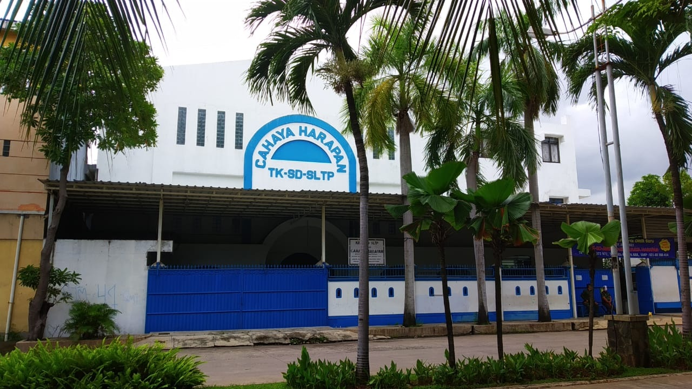
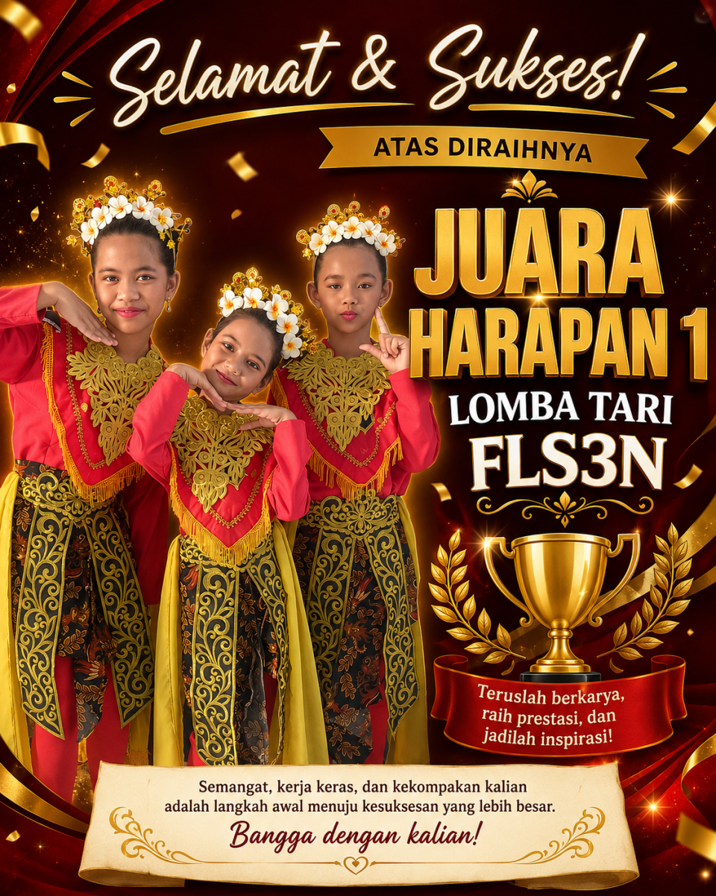
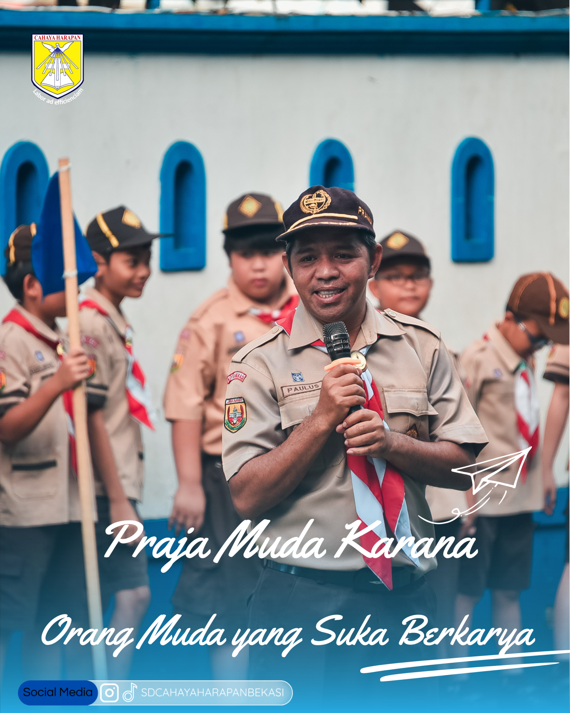

Anak kami menjadi lebih percaya diri, disiplin, dan senang bercerita tentang kegiatan belajar di sekolah.
Sekolah Dasar Modern Bekasi
|
Lingkungan belajar yang aman, modern, dan terarah untuk membantu siswa berkembang secara akademik, sosial, dan karakter.
0
Siswa Aktif
0
Prestasi Tahun Ini
0
Tenaga Pendidik
Tentang Sekolah
Lihat Tentang Sekolah
→
SD Cahaya Harapan Bekasi
SD Cahaya Harapan Bekasi adalah sekolah Katolik yang membentuk generasi beriman, berkarakter, dan berprestasi melalui pendidikan berkualitas yang berlandaskan nilai kasih, disiplin, dan pelayanan. Dengan lingkungan belajar yang aman dan penuh perhatian, siswa didorong untuk bertumbuh menjadi pribadi yang cerdas, mandiri, serta memiliki semangat Kristiani dalam kehidupan sehari-hari.
A
Akreditasi
0
Siswa Aktif
0
Program Unggulan
Sekolah Katolik

BerkarakterBerita
Kegiatan dan Informasi Terbaru Sekolah
Prestasi, Program Unggulan & Aktivitas Sekolah
Dedikasi, kerja keras, dan bimbingan maksimal telah mengantarkan siswa-siswi kami meraih berbagai penghargaan bergengsi di tingkat kota, nasional, hingga internasional.
Lihat Detail Prestasi →
Berbagai Penghargaan
Tingkat Nasional & Provinsi
Media
Kabar & Aktivitas Terbaru Sekolah

Kegiatan Upacara Permainan Besar Siaga
PPDB 2026 - Gelombang 1
Pendaftaran Peserta Didik Baru Telah Dibuka
Periode Maret-Mei 2026. Konsultasi dan pendaftaran langsung bersama tim SD Cahaya Harapan Bekasi.
- Kurikulum Merdeka + penguatan karakter
- Fasilitas lengkap dan lingkungan aman
- Pendampingan orang tua selama proses
Pendaftaran terbatas, segera amankan tempat.
01
Konsultasi kebutuhan siswa
02
Lengkapi data dan berkas
03
Konfirmasi jadwal kunjungan
Pendaftaran ditutup dalam:
0Hari
0Jam
0Menit
0Detik
Kunjungan Sekolah
Ingin Melihat Lingkungan Belajar Secara Langsung?
Jadwalkan kunjungan ke SD Cahaya Harapan Bekasi untuk melihat langsung suasana belajar, fasilitas, dan aktivitas siswa.
Jadwalkan KunjunganApa yang Akan Anda Lihat?
- Lingkungan sekolah yang nyaman
- Interaksi guru dan siswa
- Proses pembelajaran di kelas
- Program karakter dan kegiatan siswa
Waktu Kunjungan:
Senin - Jumat (08.00 - 12.00)
Feedback Orang Tua